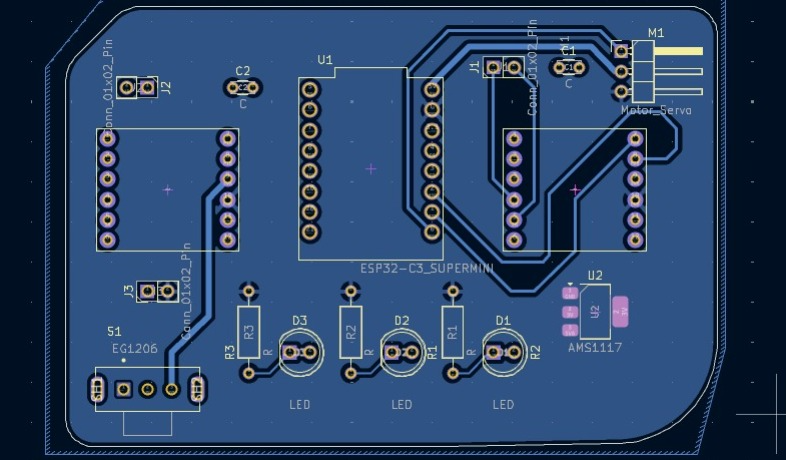
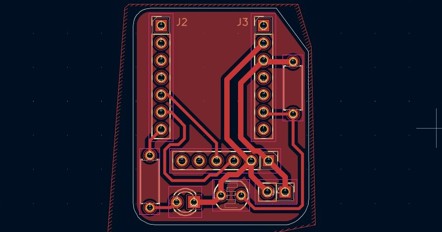
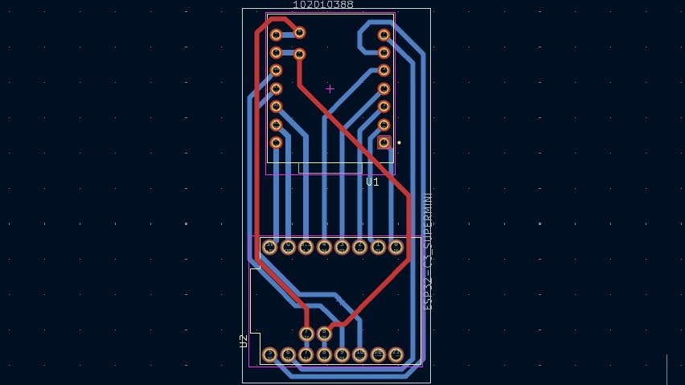
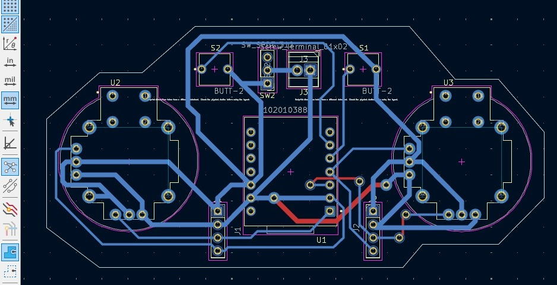

KiCad
KiCad es un software de diseño electrónico que permite crear esquemas eléctricos y diseñar placas de circuito impreso (PCB), se pueden dibujar conexiones entre componentes, organizar circuitos, crear pistas, organizar capas y generar los archivos necesarios para fabricar una PCB real. También permite visualizar el circuito en 3D, lo que facilita entender cómo quedará el diseño final.
Placa 1
Esta placa fue diseñada para ir dentro de un carro robot, y su función principal es integrar y organizar todos los componentes electrónicos necesarios para que el robot pueda moverse y funcionar de manera ordenada. Por eso incluye dos controladores de motores, el módulo ESP32-C3 SuperMini, conexiones para botones, LEDs, servo, capacitores y un regulador de voltaje
Placa 2
Esta placa es un módulo de distribución y conexión para controladores de motores, diseñada para un carro robot, donde J2 y J3 sirven como conectores para los motores y las señales provenientes del microcontrolador.
Placa 3
Esta placa sirve como un adaptador que convierte la distribución de pines de un módulo XIAO al formato del ESP32-C3 SuperMini, permitiendo reemplazar uno por otro sin cambiar todo el diseño del robot.
Placa 4
Esta placa es un módulo de control para un carro robot, diseñado para conectar dos controladores de motores (U2 y U3), botones (S1 y S2), un conector de alimentación (J3) y un microcontrolador central (U1).
